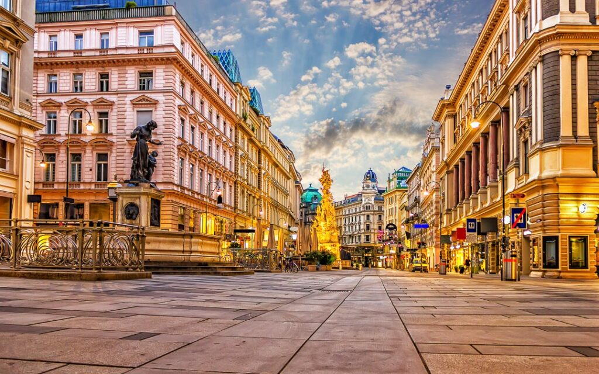
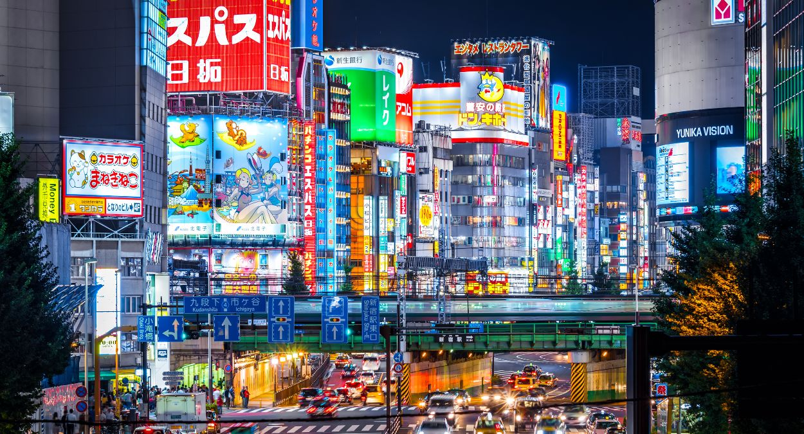

Cidade do Vaticano
A Cidade do Vaticano é o menor país do mundo e está localizada dentro de Roma. Sua criação oficial aconteceu em 1929, após o Tratado de Latrão, que garantiu a independência da Santa Sé. O Vaticano é considerado o centro da Igreja Católica e a residência oficial do Papa, possuindo enorme importância histórica, política e religiosa para milhões de pessoas ao redor do mundo.

A economia do Vaticano é baseada principalmente no turismo, nas doações de fiéis e na administração de museus e patrimônios históricos. Sua arquitetura é marcada pelos estilos renascentista e barroco, com construções famosas como a Basílica de São Pedro e a Capela Sistina, conhecida pelas pinturas de Michelangelo. A religião predominante é o catolicismo, sendo o Vaticano o principal centro religioso da Igreja Católica no mundo.
Viena, Áustria
Viena é a capital da Áustria e possui uma longa história ligada ao antigo Império Austro-Húngaro. Durante séculos, a cidade foi um dos maiores centros políticos e culturais da Europa, destacando-se principalmente na música, na arte e na filosofia. Viena também ficou conhecida por compositores famosos como Wolfgang Amadeus Mozart e Ludwig van Beethoven.

A economia de Viena é baseada no turismo, nos serviços, na tecnologia e nas atividades financeiras, sendo considerada uma das cidades com melhor qualidade de vida do mundo. Sua arquitetura mistura estilos gótico, barroco e moderno, com construções importantes como o Palácio de Schönbrunn e a Catedral de Santo Estêvão. A religião predominante historicamente é o cristianismo católico, embora atualmente a cidade possua grande diversidade religiosa e cultural.
Tóquio, Japão
Tóquio é a capital do Japão e uma das maiores cidades do mundo. Antigamente chamada Edo, a cidade tornou-se capital imperial em 1868, durante a Restauração Meiji, período em que o Japão passou por intensa modernização. Desde então, Tóquio se transformou em um dos principais centros econômicos, tecnológicos e culturais do planeta.

A economia de Tóquio é muito desenvolvida, destacando-se nas áreas de tecnologia, indústria, comércio e serviços financeiros. Sua arquitetura combina tradição e modernidade, reunindo templos antigos, como o Templo Sensō-ji, e estruturas modernas, como a Tokyo Skytree. As principais religiões presentes na cidade são o xintoísmo e o budismo, que influenciam fortemente a cultura e os costumes japoneses.